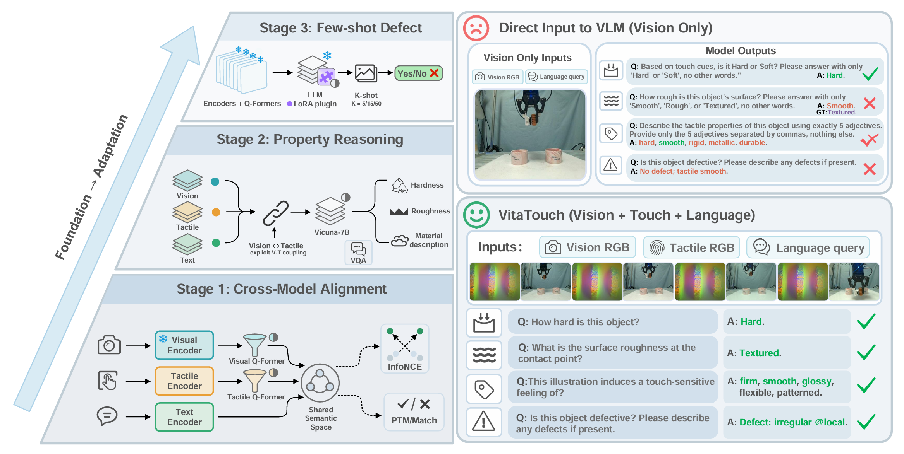
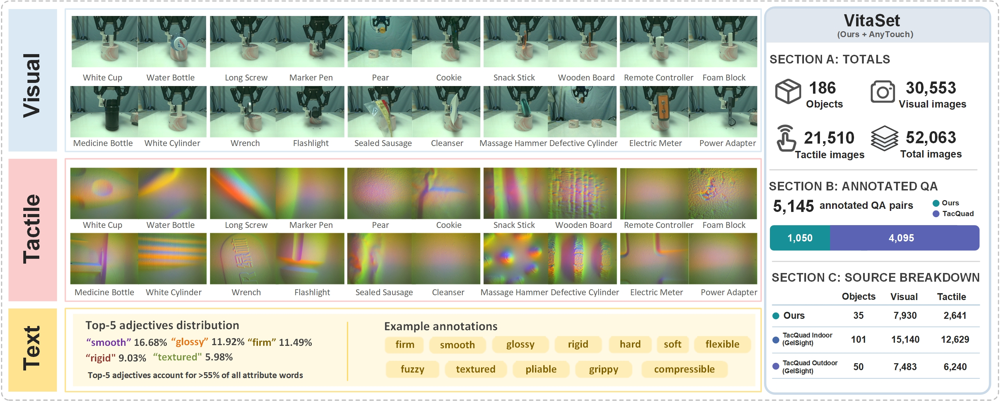
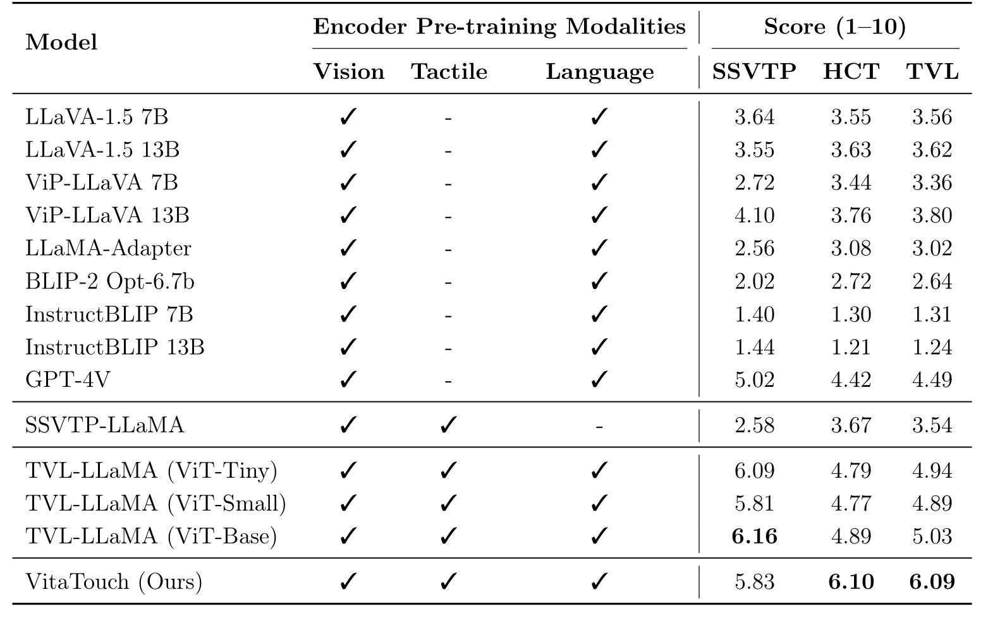
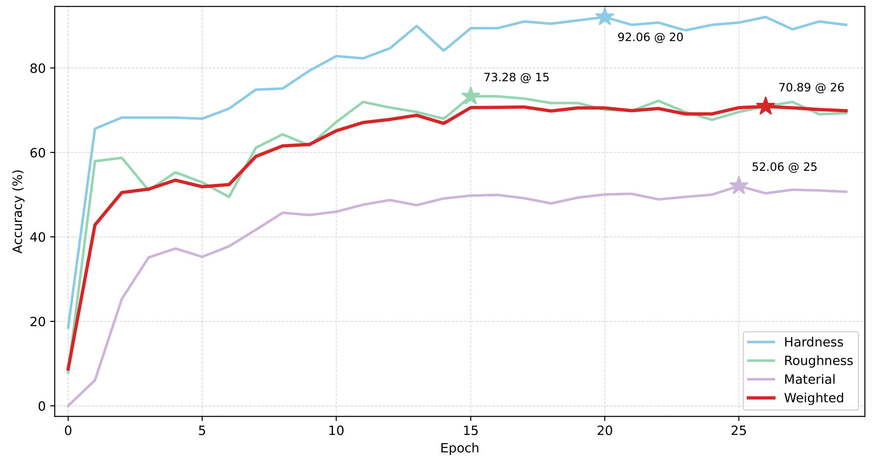
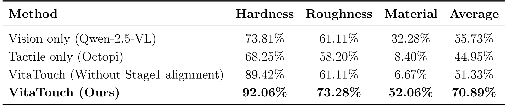
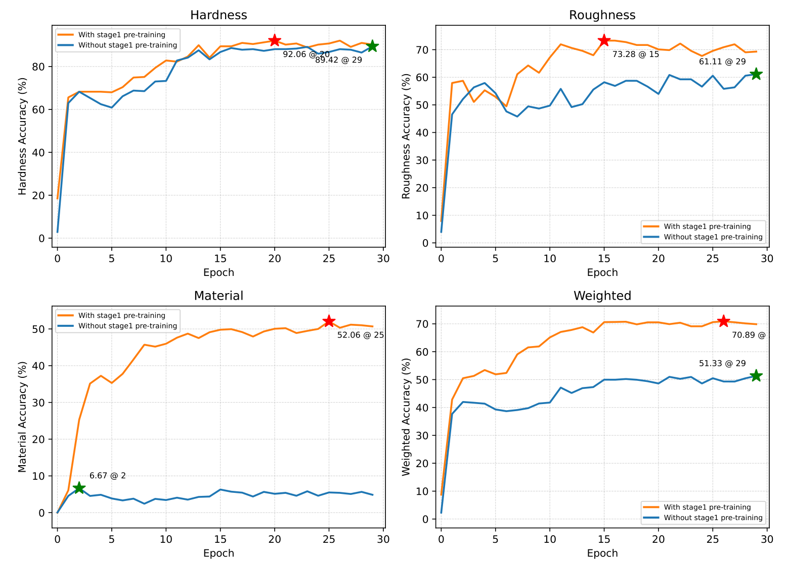
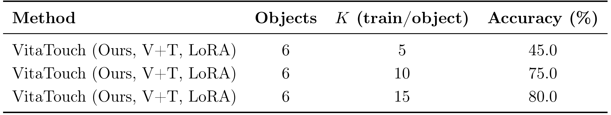
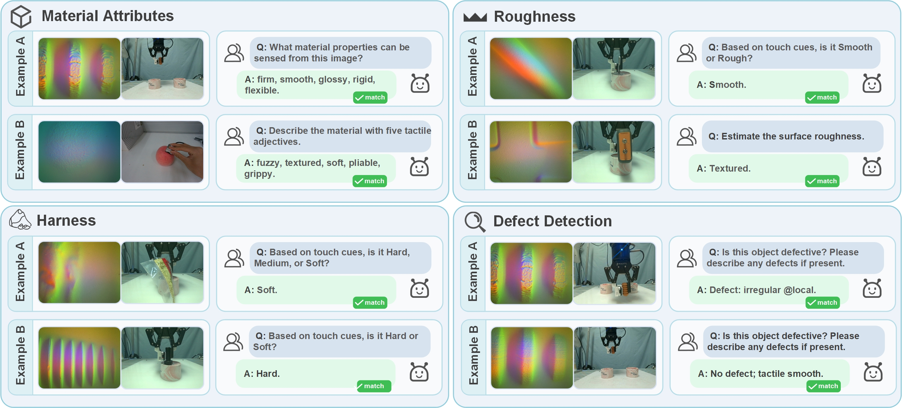
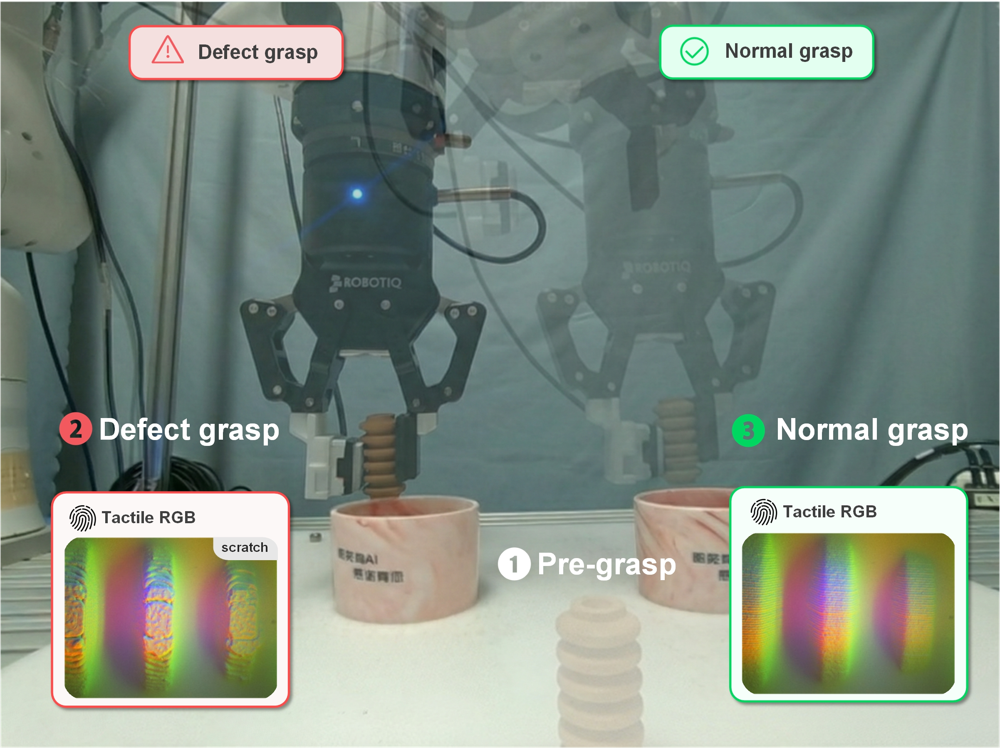

Abstract
Quality control in smart manufacturing requires multi-level object understanding, including material property recognition, monitoring of process-relevant attributes, and defect inspection. VitaTouch is a property-aware vision–tactile–language foundation model that integrates visual and tactile sensing with natural-language queries in a unified semantic space. The model distills modality-specific evidence from the visual and tactile streams into compact multimodal prefix tokens, projected into the embedding space of a large language model and used to condition its generation. Training proceeds in three stages: (i) dual Q-Former cross-modal alignment, (ii) foundation model training for multi-property object attribute recognition, and (iii) few-shot finetuning for defect detection via LoRA.
Overview of the progressive three-stage pipeline (alignment → property foundation → LoRA few-shot defect).

VitaSet
VitaSet is a vision–tactile–language dataset for industrial quality inspection, integrating a self-collected GelSight robotic manipulation set and the GelSight-only subset of AnyTouch. It contains 186 objects, 30,553 RGB images, 21,510 GelSight tactile images (52,063 total), and 5,145 instruction–answer QA pairs under a unified annotation schema.

Method
Three-stage training
- Stage 1: Cross-modal alignment (InfoNCE + PTM) to align vision↔text and tactile↔text using language as anchor.
- Stage 2: Property-reasoning foundation: inject fused vision–tactile prefix tokens into a frozen LLM (Vicuna-7B) for property VQA.
- Stage 3: Few-shot defect adaptation: LoRA tuning on LLM attention projections, updating only LoRA parameters.

Results
TVL Benchmark
Table 2: Comparison on the TVL benchmark. VitaTouch achieves the best performance on HCT and TVL, and remains competitive on SSVTP.

VitaSet Validation Performance
Figure 4: VitaSet dataset: validation performance vs. epoch across tasks. Stars denote the best epoch for each task/aggregate metric.

Ablation on VitaSet
Table 3: Ablation results on the VitaSet dataset comparing unimodal baselines with VitaTouch.

Figure 5: Ablation results on the VitaSet dataset across tasks. Each variant removes one key stage/component from the full model, demonstrating the necessity of explicit alignment and multimodal fusion for robust multi-task property learning.

Few-shot Defect Detection (LoRA)
Table 4: Stage 3 few-shot defect detection with LoRA by varying the number of training samples per object K (6 objects; test set fixed).

Qualitative Outputs
Figure 6: Qualitative inspection-style outputs of VitaTouch. We show representative predictions for material attribute description (controlled vocabulary), roughness and hardness classification, and defect decision with brief description.

Robotic Sorting Demonstration
Figure 7: Proof-of-concept robotic sorting demonstration. The robot performs pre-grasp, acquires tactile RGB observations during grasp, predicts defect/normal using the Stage 3 model, and sorts the object into defect (left) or normal (right) bin accordingly.

Robotic Sorting Demo
We provide videos of the proof-of-concept closed-loop sorting system. The robot acquires aligned vision and tactile observations during grasp, predicts defect vs. normal using the Stage-3 model, and places objects into the left (defect) or right (normal) bin.
Defect → Left Bin
Normal → Right Bin
Citation
If you find our work useful, please consider citing:
@article{zong_vitatouch_2025,
title = {VitaTouch: A Property-Aware Vision--Tactile--Language Foundation Model for Manufacturing Quality Inspection},
author = {Zong, Junyi and Jia, Qingxuan and Shi, Meixian and Li, Tong and Li, Jiayuan and Lv, Zihang and Chen, Gang and Deng, Fang},
year = {2025}
}